Obras: Suas obras são carregadas de conteúdo social expondo claramente uma total aversão aos conceitos de autoridade e poder. Em telas e murais faz suas críticas, normalmente sociais, mas também comportamentais e políticas, de forma agressiva e sarcástica, provocando em seus observadores, quase sempre, uma sensação de concordância e de identidade. Apesar de não fazer caricaturas ou obras humorísticas, não raro, a primeira reação de um observador frente a uma de suas obras será o riso. Espontâneo, involuntário e sincero, assim como suas obras.
> 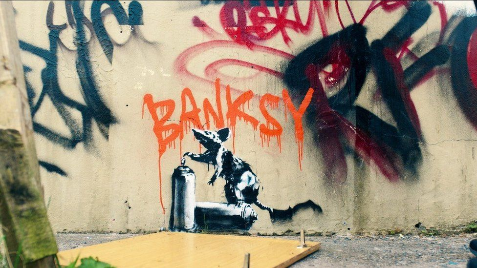 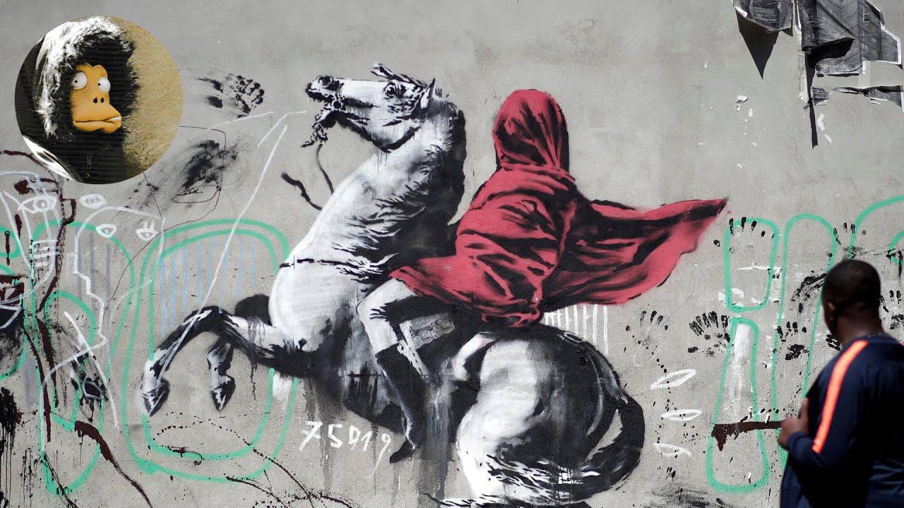 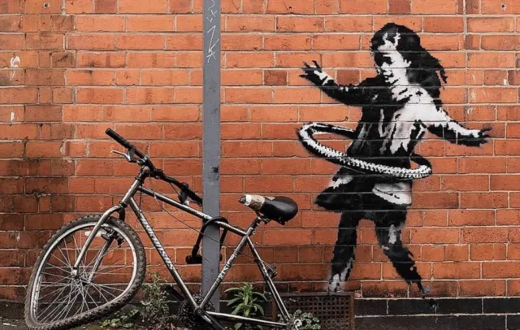 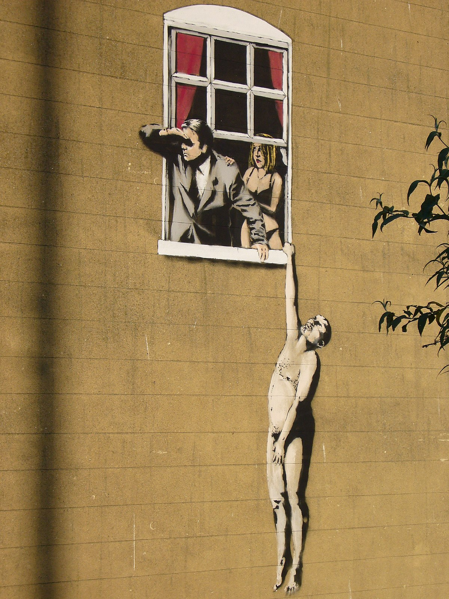 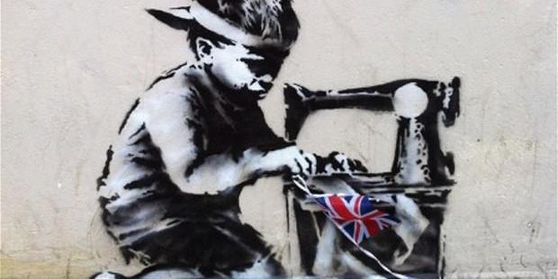
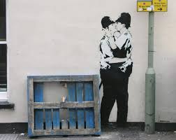
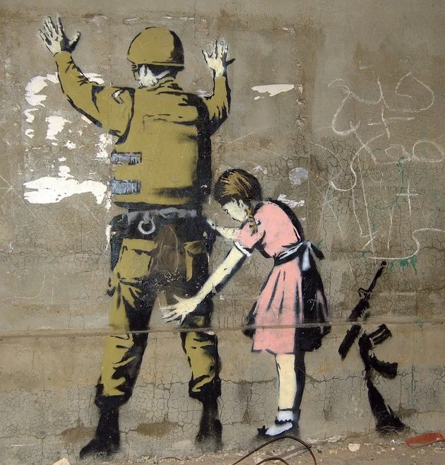
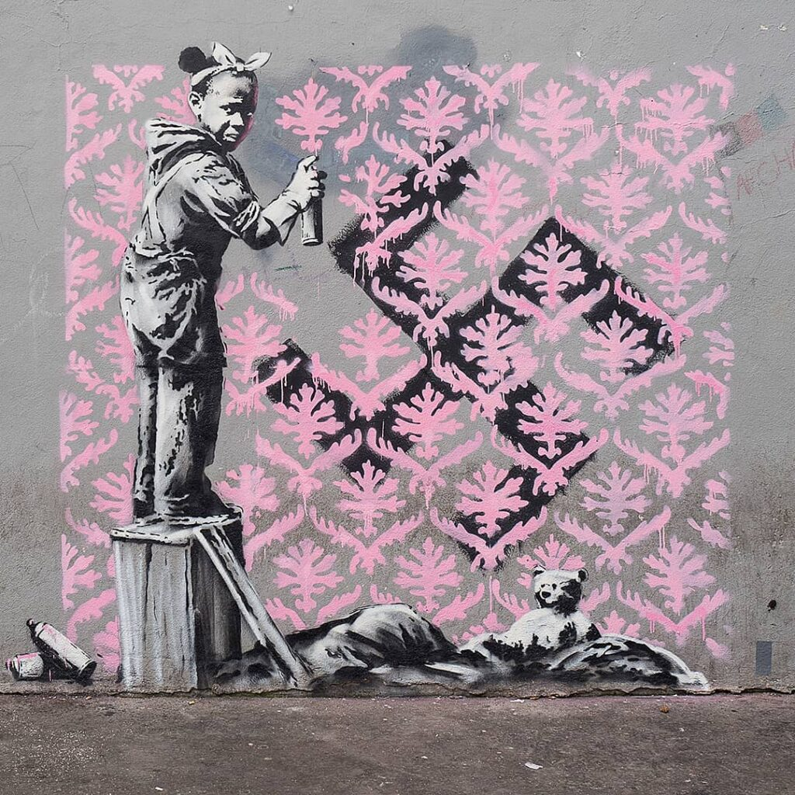
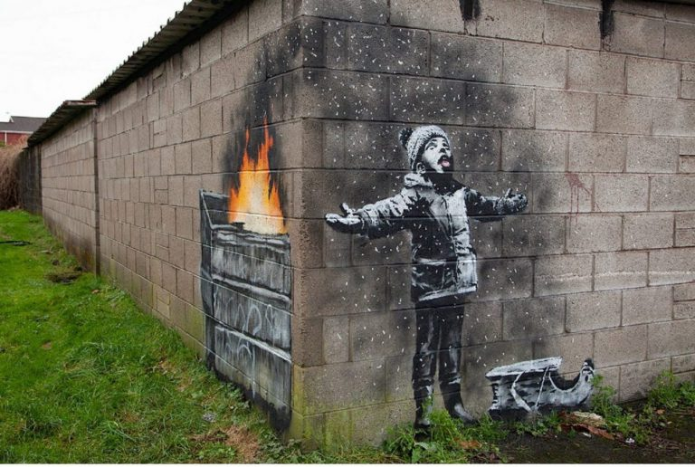
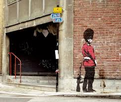
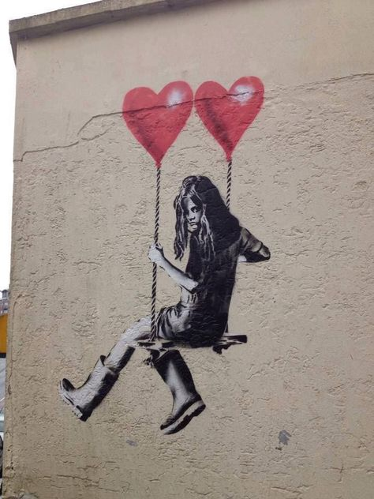
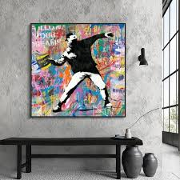
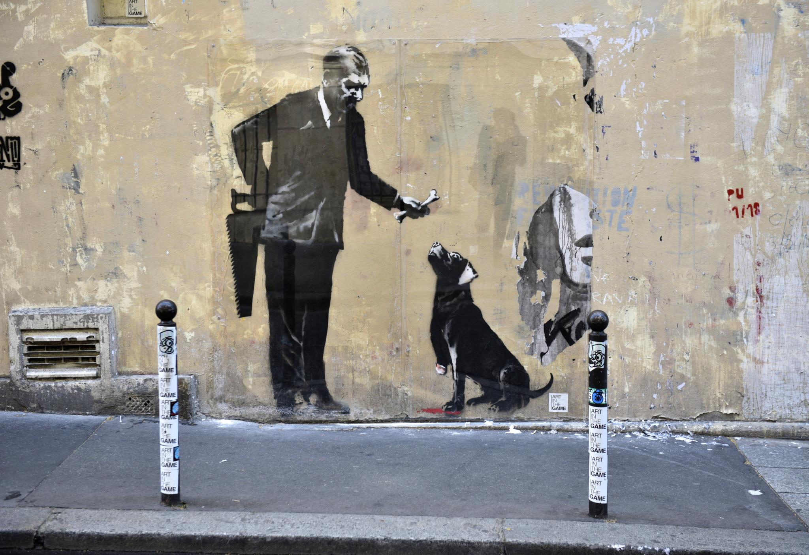
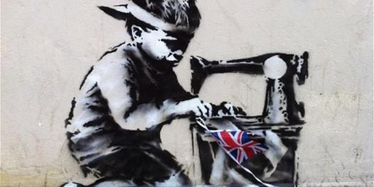
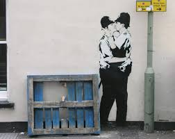
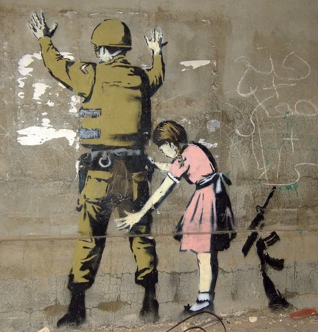
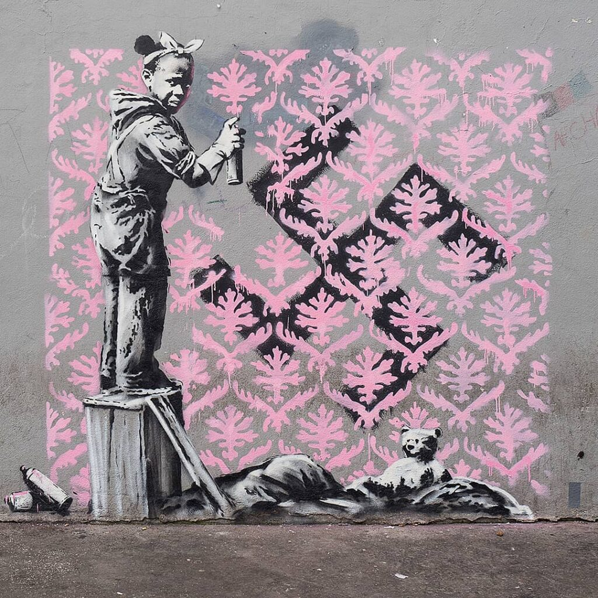
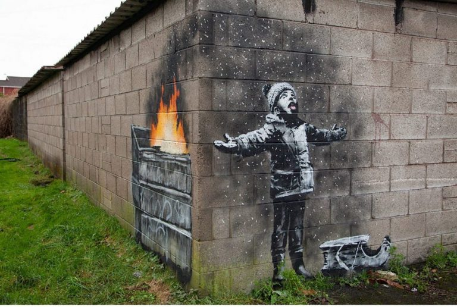
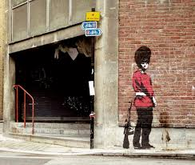
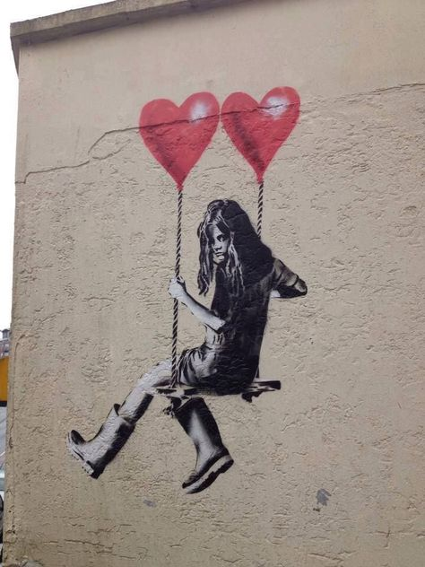
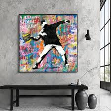
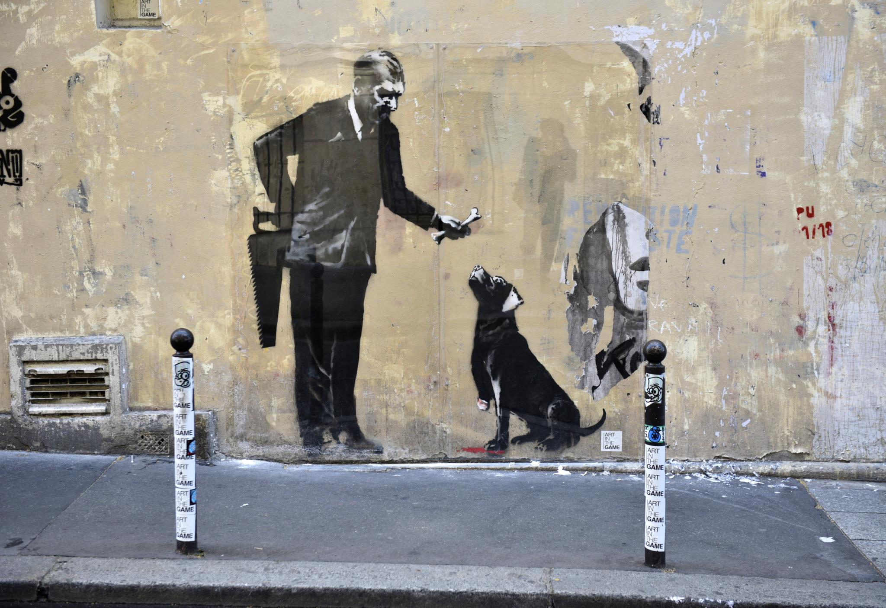